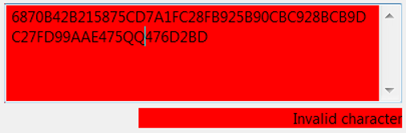
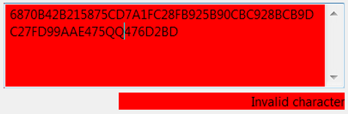

1) General functionality of the plugin 1.1) Input fields 1.2) Parameters 1.3) Buttons 2) Winternitz OTS algorithm 2.1) Key generation 2.1.1) Used parameters 2.1.2) Private key (X) 2.1.3) Public key (Y) 2.2) Signature generation 2.2.1) Generation of vector B 2.2.2) Signature 2.3) Signature validation 3) WOTS+ 3.1) Bitstring R 3.2) Example 4) Security 5) References
This visualization is a demonstration of the Winternitz One-Time Signature (WOTS).
WOTS is an algorithm to sign digital messages. When using a one-time signature, a pair of keys is used only once to sign a single message.
JCT contains in several plugins a sequence of visualizations of modern PQC signatures (like XMSS and SPHINCS) – a good and up-to-date overview of such schemes can be found in Wikipedia [1,2]. WOTS in the variant WOTS+ is a component of both, XMSS and SPHINCS.
All "input fields" can be edited. Only the message field has to be filled with text by the user; all other fields are calculated by pressing the buttons Generate signature or Validate signature. The calculated fields continue to be editable in order to show the correctness of the signature validation.

General information to avoid misuse: Below every editable field, the actual length and the target length of the field are displayed. While editing in any field the actual value will change dynamically, and it changes to red if actual and target value of the field length don't match. You may use arbitrary symbols while editing the message field, but all other fields accept only hexadecimal values (0-9 and A-F). If an invalid symbol is entered, the field will change its color to red. As long as either invalid symbols are present, or the actual and target values don't match, the possibility to edit other fields is disabled.
 

There is a dependency between the buttons "Generate keys", "Generate signature", and "Validate signature" concerning their activation: The button Generate signature is disabled as long as the button Generate keys has not been pushed. The same applies for "Validate signature", which is only activated after a signature has been generated.
The private key X consists of t blocks, each containing n pseudorandom bytes.
The public key Y also consists of t blocks. These blocks are generated by hashing each block of X w-1 times.

B consists of t blocks. To get these blocks, a checksum of m (m is the hash value of the message) is calculated. To be able to do this, m is converted to base w.
C = checksum = sum of w-1-M_i with 1 <= i <= l_1.
Now, both m and C are converted to base w, which results in t values (m base w has t_1 values, C base w has t_2 values). If necessary, t_1 and t_2 are padded with 0s in order to calculate their correct values.
For further calculation, the t values of B are interpreted as integers.
Example: block b_i = 0111 = 7
To generate a signature, each block X_i of the t secret key blocks is hashed b_i times. The results are t blocks, which form the signature sig.

To validate a signature, the vector B is calculated the same way as in section 2.2.1. Each block sig_i of the signature is hashed w - 1 - b_i times. The resulting check signature consists of the blocks of the private key, which have been hashed w-1 times each (b_i + w - 1 - b_i). Because the public key also consists of the w-1 times hashed blocks of the private key, the public key and the calculated check signature should be the same. If this is the case, the signature is valid.

The difference between WOTS and WOTS+ is how each block is processed. In WOTS+, an additional bitstring R consisting of w-1 blocks (n bits each) is generated. When hashing the blocks for the xth time, an additional XOR with the xth block of R is applied.
R consists of w-1 blocks, each block containing of n pseudorandom bits, which are added to the beginning of the public key Y.
Calculation of the first block of the public key (Y_1): Before hashing the block X_1 for the first time, an XOR operation with the first block of R (R_1) is applied. Before hashing it the second time, an XOR operation with the second block of R (R_2) is applied. Because the block is hashed w-1 times in total, R also consists of w-1 blocks. Calculation of the first block of the validation signature: Assuming that b_1 = 6 and w = 10, sig_1 will be processed w - 1 - b_1 = 3 times. For the first block, R_1 is not used for the XOR operation, but R_(b_i + 1) is. The reason behind this is to get the correct value, which can be compared to Y_1 (first block of the public key).

For both algorithms it is absolutely necessary that a pair of keys is only used to sign one single message (one-time signature), otherwise it would be possible for an attacker to learn the whole private key by signing two chosen messages. As a solution to this problem, it is possible to authenticate many one-time public keys with a binary tree through a single hash (see Merkle trees). The security of both algorithms strongly depends on the used hash function. WOTS requires a collision-resistant hash function, WOTS+ a 2nd-preimage-resistent hash function. In conclusion, WOTS+ has less requirements to the used hash function, but is more complex in calculation.
Additional Information about Post-Quantum Cryptography (PQC) and the Winternitz One-Time-Signature can be found here: